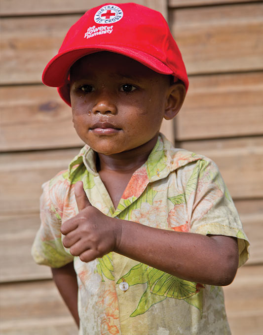

Government supporters

David* lives in a village on Savusavu, a Fijian island where Australian Red Cross has helped to provide clean water for the past 12 years. *This name has been changed to protect the individual’s privacy.
Australian Red Cross/Phil Brown
The following government agencies provided $5,000 or more to support our services, or our delivery of government services during the 2014/2015 financial year:
Commonwealth Government
- Attorney-General’s Department
- Department of Education and Training
- Department of Foreign Affairs and Trade
- Department of Health
- Department of Immigration and Border Protection
- Department of the Prime Minister and Cabinet
- Department of Social Services
- National Disability Insurance Scheme
- National Disability Services
Australian Capital Territory
- ACT Health
- Community Services Directorate
New South Wales
- Ageing, Disability and Home Care
- AMES
- Blacktown City Council
- City of Sydney
- Department of Education and Communities
- Family and Community Services
- Lake Macquarie City Council
- Ministry for Police and Emergency Services
- NSW Environmental Trust
- NSW Health
- Port Stephens Council
- Randwick City Council
- Transport for NSW
- Wagga Wagga City Council
Queensland
- Brisbane City Council
- Central Queensland Medicare Local
- Department of Infrastructure, Local Government and Planning
- Department of Communities, Child Safety and Disability Services
- The Department of Education and Training
- Gambling Community Benefit Fund
- Gold Coast Medicare
- Livingstone Regional Council
- Lord Mayor’s Community Fund
- Moreton Bay Regional Council
- Premier’s Disaster Relief Appeal
- Queensland Mental Health Commission
- Rockhamption Regional Council
- Sunshine Coast Council
Tasmania
- Department of Education
- Department of Health and Human Services
- Department of Justice
- Department of Police and Emergency Management
- Department of Premier and Cabinet
- Department of Primary Industries, Parks, Water and Environment
- Office of the Anti-Discrimination Commissioner
Northern Territory
- Department of Correctional Services
- Department of Sport and Recreation
- Department of Transport
- Northern Territory Emergency Service
- NT Environment Protection Authority
South Australia
- Australian Sports Commission
- City of Onkaparinga
- Department for Communities And Social Inclusion
- Department for Planning, Transport and Infrastructure
- Department of Correctional Services
- Department of Environment, Water and Natural Resources
- Mental Health Commission
- Regional Development Australia – Yorke and Mid North
- South Australian Fire and Emergency Commission (SAFECOM)
Victoria
- Commission for Children and Young People
- Country Fire Authority
- Department of Education and Training
- Department of Health and Human Services
- Department of Justice and Regulation
- Lord Mayor’s Charitable Foundation
- Melbourne City Council
- Office of Emergency Management Commissioner
- Office of Multicultural Affairs and Citizenship
- Regional Development Victoria
- State Trustees
- Victorian Multicultural Commission
Western Australia
- Department for Child Protection and Family Support
- Department of Corrective Services
- Department of Housing
- Department of Local Government and Communities
- Disability Services Commission
- Lotterywest
- Office of Multicultural Interests
- State Emergency Management Committee
- Western Australia Police
Partner organisations
The following organisations supported our work in various ways, by delivering services together with Red Cross or as sub-contractors:
- 4 Walls
- Affordable Housing
- American Red Cross
- Anglicare
- Anglicare SA
- Argyle Community Housing
- Asylum Seeker Resource Centre
- Asylum Seeker Welcome Centre
- Australian Council for International Development (ACFID)
- Australian Council of Social Service (ACOSS)
- Australian Dental Association
- Australian Psychological Society
- Baptist Care
- Bridge Housing Limited
- Brotherhood of St Laurence
- Catholic Care
- Centacare
- Centacare Cairns
- Centre for Multicultural Youth
- Charles Darwin University
- Community Housing Limited
- Compass Housing Services
- Dietitians Associations of Australia
- Ecclesia Housing
- Edel Quinn Hostel Wagga Wagga
- FASSTT network
- Foodbank SA
- Foodbank WA
- Foote Foundation
- Hotham Mission (Lentara Uniting Care)
- Hume Community Housing Association
- Hutt Street Centre
- International Association for Volunteer Effort (IAVE)
- International Committee of the Red Cross
- International Federation of Red Cross and Red Crescent Societies
- Jesuit Refugee Service
- La Trobe University
- Life Without Barriers
- Link Housing Ltd
- Mackillop Family Services
- Marist Youth Care
- Melaleuca Refugee Centre
- Mental Health Coalition
- Mercy Community Services
- Mercy Family Services
- Meredith Carter and Associates
- Metropolitan Migrant Resource Centre
- Miwatj Health Aboriginal Corporation
- Monash University
- Multicultural Development Association
- Northern Institute
- Northern Territory Council of Social Services
- Pandanus Evaluation and Planning Services
- Princess Margaret Hospital
- Public Health Association of Australia
- Refugee Council of Australia
- Refugee Health Network
- Refugee Legal Providers
- Salvation Army
- Save the Children
- SecondBite
- Settlement Council of Australia
- Social Ventures Australia
- Southern Cross Community Housing
- St George Community Housing
- St Vincent de Paul Society
- Swinburne University
- The Miller Group
- The Smith Family
- United Nations High Commissioner for Refugees
- UnitingCare Burnside
- UnitingCare NSW.ACT
- University of Adelaide
- University of Melbourne
- University of Western Sydney
- Victoria Legal Aid
- Victorian Council of Social Service
- Victorian Foundation for the Survivors of Torture
- Volunteering Australia
- Volunteering Tasmania
- Wesley Mission
- Western Australian Council of Social Services